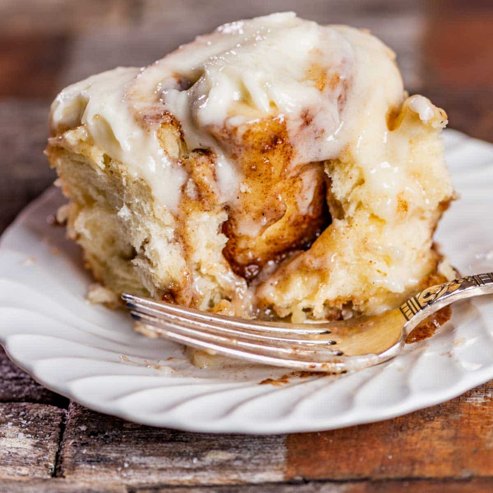

Sweetness' Cinnamon Rolls

The Best Homemade Cinnamon Rolls
Using my secret ingredient of heavy cream will
leave you with a gooey caramel sauce on the bottom of the rolls
FOR THE DOUGH
- 1 cup warm milk
- 2 1/2 teaspoons instant dry yeast
- 2 large eggs
- 1/3 cup salted butter
- 1/2 cup granulated surgar
- 1 teaspoon salt
- 4 1/2 cups bread flour
FOR THE FILLING
- 1/2 cup salted butter
- 1 cup packed brown sugar
- 2 tablespoons cinnamon
- 1/2 cup heavy cream
FOR THE FROSTING
- 6 ounces cream cheese
- 1/3 cup salted butter
- 2 cups powdered sugar
- 1/2 tablespoon maple extract
Instructions
- Pour the warm milk (115F) in the bowl of a stand
mixer and sprinkle the yeast overtop. Allow this
to sit for 3-4 minutes. The yeast will get a little
frothy to show it is activated. 1 cup warm
milk, 2 1/2 teaspoons instant dry yeast
- Add the room temperature eggs, butter and sugar.
Mix until combined. 2 large eggs, 1/3 cup salted butter,
1/2 cup granulated sugar.
- Add in salt and 4 cups (save the other 1/2 cup and add
only if you need it)
of flour and mix using the beater blade just until the
ingredients are barely combined. Allow the mixture to rest for 5
minutes so the flour has time to soak up the liquids
1 teaspoon salt, 4 1/2 cups bread flour
- Scrape the dough off the beater blade and remove it.
Attach the dough hook.
- To knead, beat the dough on medium speed for 5-7 minutes,
adding in up to 1/2 cup more flour only if needed to form a dough.
The dough should be elastic and smooth The dough should be tacky
and will pull away from the sides of the bowl but may
stick slightly the bottom. That's okay!
Don't be tempted to add more flour at this point.
We generally add about 4 1/4 cups, but start with 4 cups.
- Spray a large bowl with cooking spray. Use a rubber
spatula to remove the dough from the mixer bowl and
place it in the greased large bowl. Cover the bowl
with a towel or wax paper.
- Set the bowl in a warm place and allow the dough to recipesuntil double.
I like to turn on the oven to the lowest setting for 1-2 minutes.
Then turn off the oven and place the dough to rise in there.
It normally takes about 30 minutes for the dough to rise. Do not
allow the dough to rise too much or your cinnamon rolls
will be airy.
- While the dough is rising, prepare the cinnamon filling. In
a medium bowl,k combine the soft butter, brown sugar and cinnamon,
mixing until well combined. Set aside. 1/2 cup salted butter
,1 cup packed brown sugar, 2 tablespoons cinnamon
- Sprinkle a pastry mat or work surface generously with flour
Turn out the dough onto the surface and sprinkle the top of the dough
with additional flour.
- Flour a rolling pin and roll the dough to about a 24x15" rectangle.
The size of the rectangle can vary...it does not have to be exact!
- Use a rubber spatula to smooth the cinnamon filling over the whole
dough rectangle.
- Starting on the long side, roll the dough up tightly,
jelly roll style.
- Cut into 12 slices and place in a greased 9x13 baking pan.
Cover the pan and allow the rolls to rise
for 20 minutes while the oven is preheating
- Preheat the oven to 375F
- Warm the heavy cream until the chill is off. Don't make
it hot, you just don't want it cold. It should be warm to
the touch. Once the rolls have risen, pour the heavy cream
over the top of the rolls, allowing it to soak down in
and around the rolls. 1/2 cup heavy cream
- Bake in a preheated oven for 25 minutes, until the rolls are lightly
golden brown and the center rolls are cooked through.
Check the rolls at 20 minutes. If they are getting
too browned, cover loosely with foil for the remaining
baking time.
- While the rolls are cooling, prepare the cream cheese
frosting.
- In a large bowl, combine the softened cream cheese and butter
using a hand mixer. Blend well. 6 ounces cream cheese,
1/3 cup salted butter.
- Add in your favorite extract and the powdered sugar.
Beat until combined. Spread the frosting over the coold rolls.
1/2 tablespoon extract, 2 cups powdered sugar.